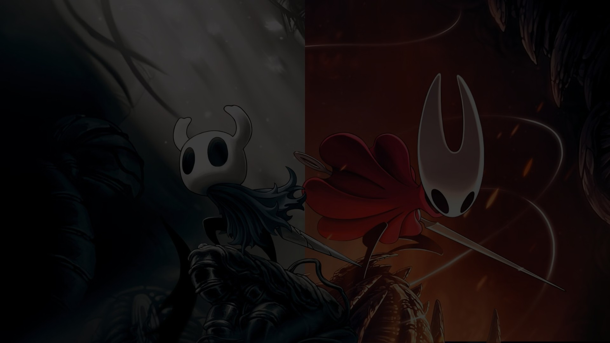
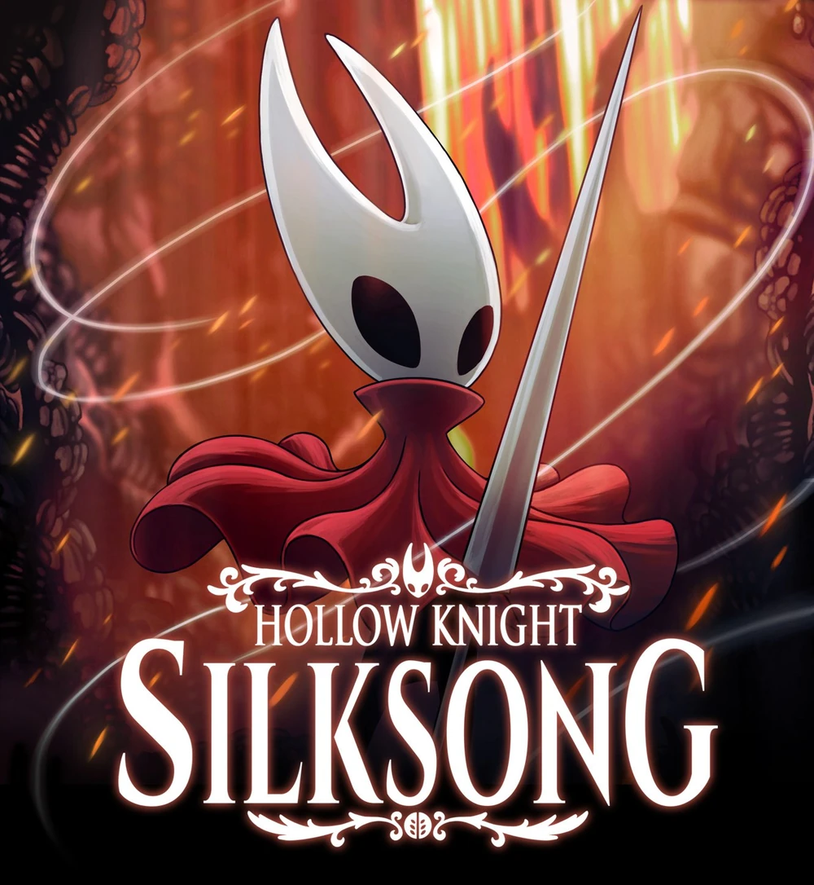

Hollow Knight es una aventura de acción clásica en 2D ambientada en un vasto mundo interconectado. Explora cavernas tortuosas, ciudades antiguas y páramos mortales. Combate contra criaturas corrompidas, haz nuevas amistades con extraños insectos y resuelve los antiguos misterios que yacen en el corazón del reino.

Hollow Knight: Silksong es la épica secuela del premiado videojuego de acción y aventura Hollow Knight. Viaja a tierras totalmente nuevas, descubre nuevos poderes, combate contras vastas hordas de bichos y bestias y revela secretos ligados a tu naturaleza y a tu pasado. Lucha como Hornet en esta nueva aventura.